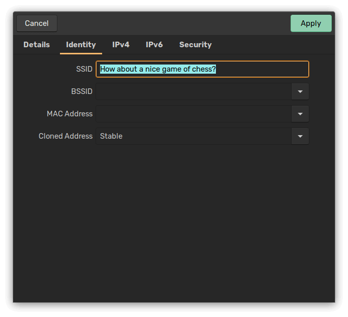

Randomizing My MAC Address With NetworkManager
My life is harder for knowing and caring about my own privacy and security. For example, if you've ever connected to the wifi at a Starbucks using a laptop, you'll have noticed the "captive portal" system they use. That's the page that pops up before you can actually use the internet. It asks you for your name, email address, and zip code.
You may also notice that once you fill out that form, you never have to do it again. Every time you connect to the Starbucks wifi afterwards, it'll usually still give you a captive portal page, but you'll never have to "log in" again. This usually holds true even if you visit a different Starbucks with the same computer.
Guess what? Starbucks is tracking you.1 I don't like that, so I lie every time I fill out that form.2 Or do I? 😉
The way Starbucks remembers your computer is by recording the MAC address of your wifi adapter.
This is a very old, very well-known privacy risk. Most operating systems have made it relatively easy to spoof your MAC address with a semi-randomly generated one to mitigate this risk. Some even do this by default now.
Even so, I have particular preferences for how I prefer this feature to work that my system's default settings don't meet.
I'm using Pop!_OS, which uses NetworkManager. I'll show you its default setup, how I changed it, and why.
Here's the default config, located at /etc/NetworkManager/NetworkManager.conf, that shipped with my machine:
[main]
plugins=ifupdown,keyfile
[ifupdown]
managed=false
[device]
wifi.scan-rand-mac-address=no
Shame on you, Pop!_OS! See wifi.scan-rand-mac-address=no? That turns off MAC randomization during access point scanning! That means you're leaking your MAC address before you even connect to wifi. Passive listeners can track you. This isn't even the default behavior as of NetworkManager 1.4.0. This is pretty embarrassing. Even Android randomizes your MAC address when scanning nowadays.
Here are my changes:
[main]
plugins=ifupdown,keyfile
[ifupdown]
managed=false
[device]
wifi.scan-rand-mac-address=yes
[connection]
ethernet.cloned-mac-address=random
wifi.cloned-mac-address=random
I changed wifi.scan-rand-mac-address to yes, even though it's the default behavior. Just to be extra sure.
I also added a setting called cloned-mac-address to both ethernet3 and wifi, and set it to random. This setting has a few other possible values. I'll quote the manual.
Beside explicitly specifying a MAC address, the special values "preserve", "permanent", "random" and "stable" are supported. "preserve" means not to touch the MAC address on activation. "permanent" means to use the permanent hardware address if the device has one (otherwise this is treated as "preserve"). "random" creates a random MAC address on each connect. "stable" creates a hashed MAC address based on connection.stable-id and a machine dependent key.
In other words, permanent and probably preserve will leak your physical MAC address when you connect to an access point. stable won't leak your physical MAC address, but it will result in a given access point seeing the same fake MAC address every time you connect to it. That doesn't really prevent tracking if every Starbucks access point presents identically.4 I want random. It generates a new, random MAC address on every connection.
There. No more tracking. Now I just have to fill out that stupid captive portal form every time I go to Starbucks with my laptop.5
But what if my router yells at me?
This happened to me. My Synology router started sending push notifications to my phone every time I turned on my laptop, asking me if I know this mysterious device that just connected.
I needed to make an exception to the rules, but just for this one wifi network. Happily, the option to change this setting is actually in the GUI.

You can see here I've set this particular connection to stable. Works like a charm.
I'm sure there's a way to do this on the command line, or in a configuration file somewhere, but I haven't needed to figure that out yet.
I have no idea if Starbucks is actively using the data they're collecting, but they are collecting it. Even if it's just within log files. I mean, they wouldn't ask you a bunch of personal information if they weren't going to use it for something, right? I'm sure they tell you what they're doing with it in their T&C. But who reads those?↩
I've noticed that they'll deny you access if you make up random email domains. Gmail addresses seem to always work, though.↩
My laptop doesn't have a built-in ethernet port, so this is probably unnecessary. But it's not hurting anything, and it'll protect me in the one-in-a-million chance I ever plug in a USB-to-ethernet dongle.↩
And almost every Starbucks access point does present identically. This is why your phone or laptop will automatically connect to Starbucks wifi even if you've never been to that particular location before.↩
Yep. I'm apparently willing to pay that price because I care that much about my privacy. Do you think I like living this way? I guess my Walter Mitty daydreams include living in the world of Hackers (1995), and running Silk Road from coffee shops but not getting caught like Ulbricht did.↩